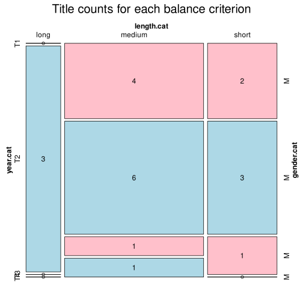

Click on a column heading to sort. Click on a text identifier to read the text (may not work in older browsers).
| Identifier | Encoding | Pages | Words | (Size) | Date (Slot) | Title | Author | Sex | Reprints |
|---|---|---|---|---|---|---|---|---|---|
| HR005 |
eltec-0 | 83 | 24513 | (short) | 1868 (T1) | Mato Vodopić (1816-1893) | M | unspecified | |
| HR006 |
eltec-0 | 79638 | (medium) | 1871 (T1) | August Šenoa (1838-1881) | M | unspecified | ||
| HR007 |
eltec-0 | 34128 | (short) | 1876 (T1) | August Šenoa (1838-1881) | M | unspecified | ||
| HR011 |
eltec-0 | 325 | 97958 | (medium) | 1878 (T1) | August Šenoa (1838-1881) | M | high | |
| HR013 |
eltec-0 | 190 | 56242 | (medium) | 1879 (T1) | August Šenoa (1838-1881) | M | unspecified | |
| HR015 |
eltec-0 | 180 | 53800 | (medium) | 1879 (T1) | Josip Eugen Tomić (1843-1906) | M | unspecified | |
| HR018 |
eltec-0 | 47593 | (short) | 1881 (T2) | Eugen Kumičić (1850-1904) | M | unspecified | ||
| HR019 |
eltec-0 | 338 | 60424 | (medium) | 1881 (T2) | Eugen Kumičić (1850-1904) | M | unspecified | |
| HR023 |
eltec-0 | 57985 | (medium) | 1882 (T2) | Ante Kovačić (1854-1889) | M | unspecified | ||
| HR026 |
eltec-0 | 71422 | (medium) | 1883 (T2) | Eugen Kumičić (1850-1904) | M | unspecified | ||
| HR027 |
eltec-0 | 87428 | (medium) | 1884 (T2) | Eugen Kumičić (1850-1904) | M | unspecified | ||
| HR032 |
eltec-0 | 100159 | (long) | 1885 (T2) | Eugen Kumičić (1850-1904) | M | unspecified | ||
| HR033 |
eltec-0 | 126927 | (long) | 1886 (T2) | Ksaver Šandor Gjalski (1854-1935) | M | unspecified | ||
| HR036 |
eltec-0 | 51764 | (medium) | 1887 (T4) | Ksaver Šandor Gjalski (1854-1935) | M | unspecified | ||
| HR037 |
eltec-0 | 146230 | (long) | 1888 (T2) | Ante Kovačić (1854-1889) | M | unspecified | ||
| HR041 |
eltec-0 | 42421 | (short) | 1889 (T2) | Josip Kozarac (1858-1906) | M | unspecified | ||
| HR067 |
eltec-0 | 37560 | (short) | 1896 (T2) | Janko Leskovar (1861-1949) | M | unspecified | ||
| HR079 |
eltec-0 | 67728 | (medium) | 1899 (T2) | Vjenceslav Novak (1859-1905) | M | unspecified | ||
| HR080 |
eltec-0 | 98087 | (medium) | 1899 (T2) | Josip Eugen Tomić (1843-1906) | M | unspecified | ||
| HR091 |
eltec-0 | 64525 | (medium) | 1906 (T3) | Vjenceslav Novak (1859-1905) | M | unspecified | ||
| HR095 |
eltec-0 | 33486 | (short) | 1911 (T3) | Ivan Kozarac (1885-1910) | M | unspecified |